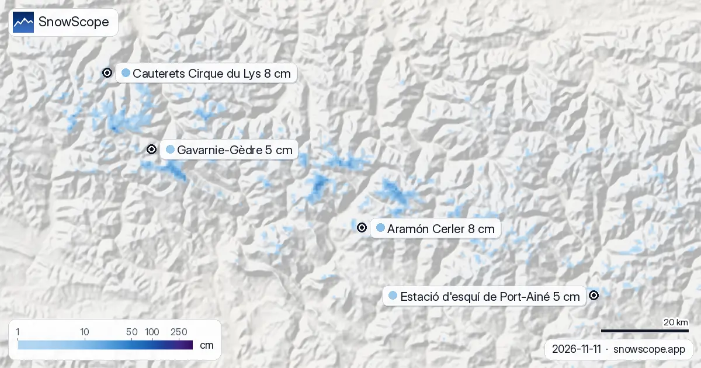

التلج فجبال البرانس هاد الموسم مقابل العام اللي فات: Estació d'esquí de Port-Ainé 0 سم مقابل 6 سم (11 نونبر)
واش كاين تلج أكثر من هادي عام؟ قارنّا اليوم مع 11 نونبر ديال الشتا اللي فاتت ف 4 محطات فجبال البرانس: 0 منهم فيهم تلج أكثر دابا، حسب الموديل ديال التلج ديالنا. أكبر فرق كاين ف Estació d'esquí de Port-Ainé: 0 سم اليوم مقابل 6 سم هادي عام. التلج ديال الشتا اللي فاتت مشى من زمان للوديان؛ هادا مازال غير كيتبنى.
شوف توقعات التلج مباشرة ديال Aramón Cerler فالتطبيق ديال SnowScopeالعلو ديال التلج، التنبيهات والخريطة 3D، فابور.
محطة بمحطة
Aramón Cerler (2060 م) خازنة 0 سم اليوم، أقل من 4 سم ديال 11 نونبر فالشتا اللي فاتت. فهاد التاريخ طبقة التلج عادة كتخزن 2 سم.
على علو 2072 م ف Cauterets Cirque du Lys التلج اليوم 0 سم، أقل من 2 سم اللي كانو مخزونين نهار 11 نونبر فالشتا اللي فاتت. العلو العادي لهاد التاريخ هو 2 سم.
Estació d'esquí de Port-Ainé (2052 م) خازنة 0 سم اليوم، أقل من 6 سم ديال 11 نونبر فالشتا اللي فاتت. فهاد التاريخ طبقة التلج عادة كتخزن 2 سم.
على علو 2050 م ف Gavarnie-Gèdre التلج اليوم 0 سم، أقل من 1 سم اللي كانو مخزونين نهار 11 نونبر فالشتا اللي فاتت. العلو العادي لهاد التاريخ هو 1 سم.
| المحطة | العلو ديال التلج | تلج جديد، 72 س | جاي، الأيام الجاية | الفوق |
|---|---|---|---|---|
| Aramón Cerler | 8 سم | 3 سم | 6 سم | 2618 م |
| Cauterets Cirque du Lys | 8 سم | 1 سم | 18 سم | 2420 م |
| Estació d'esquí de Port-Ainé | 5 سم | 0 سم | 1 سم | 2424 م |
| Gavarnie-Gèdre | 5 سم | 0 سم | 11 سم | 2283 م |

التلج المقاس
محطة Núria (1.971 m) (1971 م) قاست 5 سم نهار 11 نونبر.
محطة Boí (2.537 m) (2537 م) قاست 5 سم نهار 11 نونبر.
منين جا الفرق
الخزان ديال التلج ف Aramón Cerler كبر ب 10 سم ولا كثر ف 0 أيام هاد الشتا، ونقص ب 5 سم ولا كثر ف 0 أيام بالذوبان، الشتا ولا الريح.
ف Cauterets Cirque du Lys هاد الشتا الموديل ديالنا حسب 0 أيام زادو 10 سم ولا كثر لطبقة التلج و 0 أيام نقصو 5 سم ولا كثر بالذوبان، الشتا ولا الريح.
الخزان ديال التلج ف Estació d'esquí de Port-Ainé كبر ب 10 سم ولا كثر ف 0 أيام هاد الشتا، ونقص ب 5 سم ولا كثر ف 0 أيام بالذوبان، الشتا ولا الريح.
مع طبقة ديال التلج مازال صغيرة، عاصفة وحدة كتقرر هاد الفروق؛ ماكتقول لينا والو بزاف على الموسم اللي جاي.
الشتا اللي فاتت بالأرقام
Aramón Cerler: الشتا اللي فاتت (2025-26) طبقة التلج فهاد العلو وصلات للقمة ديالها ب 110 سم نهار 15 فبراير.
فهاد العلو Cauterets Cirque du Lys خزنات أكثر تلج فالشتا اللي فاتت (2025-26) نهار 20 فبراير: 170 سم.
Estació d'esquí de Port-Ainé: الشتا اللي فاتت (2025-26) طبقة التلج فهاد العلو وصلات للقمة ديالها ب 103 سم نهار 20 فبراير.
نصايح للي كيتزلجو
- بداية أحسن من العام اللي فات ماشي ضمانة للعطلة: تبع التوقعات، ماشي غير التلج اللي كاين فالأرض.
- الأرقام ديال الموديل كتوصف منطقة فعلو واحد؛ المحطة كتقيس نقطة وحدة. قرا بجوج قبل ما تقرر.
- التلج فالخريطة ماكيعنيش بلي المحطة محلولة: شوف التيليسييج والتواريخ فالموقع ديالها.
- قبل أي خرجة برا البيست ولا جولة، قرا النشرة الرسمية ديال الانهيارات (الروابط لتحت).
على هاد الأرقام
العلو ديال التلج فالمحطات هو أكثر تلج فالجهة الفوقانية حسب الموديل ديال التلج ديال SnowScope (تقريبا 1 كم، الحساب ديال 11 نونبر)؛ هادو تقديرات لمنطقة، ماشي قياس فنقطة وحدة. الأرقام ديال محطات القياس مقاسة فالتاريخ المكتوب. التوقعات يمكن تتبدل. ديما شوف النشرة الرسمية ديال الانهيارات قبل ما تخرج من البيست.
النشرات الرسمية ديال الانهيارات: Météo-France / Meteocat / AEMET
كيفاش تستاشهد بهاد المقال
للبحث، التعليم ولا الصحافة: الأرقام والرسومات تقدر تعاود تخدم بيهم بحرية تحت CC BY 4.0 مع هاد الاستشهاد.
SnowScope (2026), التلج فجبال البرانس هاد الموسم مقابل العام اللي فات: Estació d'esquí de Port-Ainé 0 سم مقابل 6 سم (11 نونبر), https://snowscope.app/blog/ar/2026/11/pyrenees-snow-this-season-vs-last-season-11-november-2026.html, تشاف ف 2026-11-11
SnowScope (Atlas Labs). (2026, November 11). التلج فجبال البرانس هاد الموسم مقابل العام اللي فات: Estació d'esquí de Port-Ainé 0 سم مقابل 6 سم (11 نونبر). SnowScope snow reports. https://snowscope.app/blog/ar/2026/11/pyrenees-snow-this-season-vs-last-season-11-november-2026.html
BibTeX
@misc{snowscope2026pyreneessnowthisseasonvs,
author = {{SnowScope (Atlas Labs)}},
title = {التلج فجبال البرانس هاد الموسم مقابل العام اللي فات: Estació d'esquí de Port-Ainé 0 سم مقابل 6 سم (11 نونبر)},
year = {2026},
month = nov,
howpublished = {\url{https://snowscope.app/blog/ar/2026/11/pyrenees-snow-this-season-vs-last-season-11-november-2026.html}},
note = {Published 2026-11-11 18:44 UTC; accessed 2026-11-11}
}· CC BY 4.0 · الطريقة، الداتا والأدوات →
Aramón Cerler: التلج والحرارة حسب العلو، هاد الشتا مقارنة مع اللي فاتت (الأدوات) →
تابع Aramón Cerler
فابور: ميساج ملي يجي التلج، والتوقعات كل صباح.
تقارير أخرى ديال التلج

تقرير التلج فجبال البرانس، 12 نونبر. إلا شفنا حتى ل 15 نونبر، التوقعات كتجيب 33 سم ف Cauterets Cirque du Lys، 29 سم ف Piau-Engaly و 25 سم ف Gourette. …

جمعنا العلو ديال التلج ديال اليوم، والتلج الجديد ديال 72 ساعة، والتوقعات باش نختارو Masella, Cauterets Cirque du Lys و Aramón Cerler. من هاد المحطات، …

Gourette و Cauterets جنب لجنب: العلو، التلج العادي فكل شهر، أحسن السيمانات والطريق، من 46 شتوة اللي فاتت.